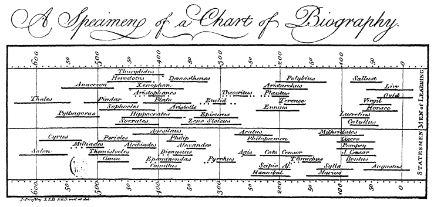

I feel like there are a lot of representational forms that I take for granted that didn’t always exist. Like, the novel has a history, or even something like historical timelines. The use of genealogical charts is actually pretty recent.
The idea that you have the present on the right and history stretching backward on the left—that’s not universal. The first one, I think, was created as a timeline of biblical figures, where Methuselah is way back here, Adam and Eve are at the start, and all the others follow. And the first of those was created by Joseph Priestley in the 18th century. That’s pretty recent.
I mean just the idea that the present is on the right—that seems to be indicative of a sense of time as progress, right, or as a sentence that you decode? The form is already embedding assumptions.
The idea that ways of representing things have a history is connected in my head to what Jameson’s saying. He’s saying we need new forms to get started.
I don’t know enough about it, but—do you have to create some kind of totality in order to position a point of departure, whatever that point might be? And does there have to be some kind of cyclicality?
Or—I don’t know, how is he suggesting that there has to be a sense of wholeness through form?
Someone like Foucault does that very well when he creates a mode of analysis that is, quite literally, a map of history and time. With archaeology, you have surface-level structures—language—and then deeper epistemic formations, layers of meaning beneath.
But the issue with that is that he was accused—or at least perceived—as creating a system of totality and trapping himself within it. That’s a critique that came from Edward Said, who argued that you don’t need totality, you don’t need a cognitive map per se.
So that’s what I’m wondering—what kind of relation does Jameson’s idea of a map or cognitive terrain have to this? Is it something more unsettled in the way he approaches it? I don’t know.
That would be my concern with it as well. But I wonder whether there’s something more provisional about it—whether that fluctuation between the individual and the system might allow totality to be changed by perspective.
That way, you don’t end up with a rigid framework but something more fluid. But I’m not sure if that’s actually what he’s allowing for. He does seem to want to move away from the general critique of totality.
In that sense, he does want to return to something like it—because he wants something to shake up thinking. It’s just not really clear how that works for him.
I mean, maybe this is going a bit off-topic, but I find the map metaphor really helpful. If you want to navigate a city, it’s obviously helpful to have a map of it. But for that map to be of any use, you have to know where you are within the city.
In addition, you also need to understand what the map represents—for example, you have to know that a little cross signifies a church, or that certain lines indicate streets you can walk down. If you lack either of those things—your position on the map or the ability to interpret its symbols—then you can’t actually navigate.
The thought here is that it’s not just difficult to know where we are within a larger social system, but it may also be difficult to even understand what is happening around us. There’s not just a problem of orientation, but a problem of recognising what the symbols of the system actually mean.
One way to take this argument could be to say: oh, you need a map of the entire world to navigate Boston. That’s obviously not true. But at the same time, to navigate Boston, you do need to know what the things on the map mean. Maybe there’s a loss of that kind of knowledge as well.
There are also different kinds of maps—a tourist might use a pedestrian map that highlights landmarks and walking routes, whereas someone navigating the city by car or public transport would need an entirely different type of map.
And even beyond that, different elements of the city come into focus depending on your perspective.
A map doesn’t just show a fixed, objective totality—it shifts depending on what you need from it. Is there such a thing as a complete map, or does a map always change based on the subjectivity of the person reading it?